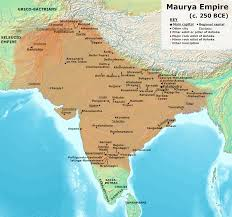
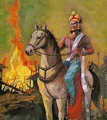
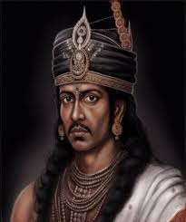

Historia

Imperio Maurya, en la antigua India, un estado con centro en Pataliputra (posteriormente Patna), cerca de la confluencia de los rios Son y Ganges (Ganga). Duro aproximadamente desde el 321 hasta el 185 a. C. y fue el primer imperio que abarcó la mayor parte del Subcontinente indio.
El imperio Maurya era una autocracia eficiente y altamente organizada con un ejército permanente y un servicio civil . Esa burocracia y su funcionamiento fueron el modelo para el Artha-shastra (“La ciencia de la ganancia material”), una obra de economía política similar en tono y alcance a El Príncipe de Nicolás Maquiavelo.

Tras la muerte de Alejandro Magno en el año 323 a. C. ,Chandragupta (o Chandragupta Maurya), fundador de la dinastía Maurya , conquistó la región de Punjab desde los límites sudorientales del antiguo imperio de Alejandro. Los seléucidas , una dinastía que competía por el legado de Alejandro , intentaron avanzar hacia la India en el 305 a . C. Fueron derrotados y, tras la conclusión de un tratado, los seléucidas y los mauryas mantuvieron relaciones amistosas.
Ahora que disfrutaba de paz a lo largo de la frontera occidental, Chandragupta era libre de centrar sus hazañas militares en el este y el sur. Al final de su reinado, había extendido su imperio por el norte de la India. Su hijo, Bindusara , continuó la expansión del imperio hasta bien entrada la región del Decán , deteniéndose en la región conocida hoy como Karnataka .
Este es el Trayecto que tuvo Bindusa durante su mandato:
- El hijo de Bindusara, Ashoka (reinó c. 265–238 a. C. o c. 273–232 a. C.), añadió Kalinga al ya vasto imperio. Sin embargo, esa incorporación sería la última, ya que la brutal conquista de la región llevó a Ashoka a abandonar la conquista militar. En cambio, abrazó el budismo e instituyó el dharma como ideología de Estado.
- Se sabe mucho del reinado de este emperador budista maurya gracias a los edictos inscritos en pilares de piedra de exquisita factura que mandó erigir por todo su reino. Dichos edictos constituyen algunos de los textos originales descifrados más antiguos de la India.
- Tras su conversión, su idea de conquista consistió en enviar numerosos emisarios budistas por toda Asia y encargar algunas de las obras más destacadas del arte indio antiguo.
- Tras la muerte de Ashoka, el imperio se redujo debido a invasiones, deserciones de príncipes del sur y disputas sobre la ascensión.
- El último gobernante, Brihadratha, fue asesinado en el 185 a. C. por su comandante en jefe brahmán, Pushyamitra, quien fundó la dinastía Shunga, que gobernó la India central durante aproximadamente un siglo.
Apogeo bajo Ashoka el Grande
El nieto de Chandragupta, Ashoka, asumió el poder en el año 268 a. C., después de una sangrienta lucha por la sucesión. Su reinado es considerado el punto más alto del Imperio Maurya.
Al principio, Ashoka fue un líder militar agresivo, y la conquista del estado de Kalinga (actual Odisha) fue especialmente brutal. Según los registros históricos, esta guerra causó la muerte de más de 100,000 personas. El sufrimiento provocado por esta batalla llevó a Ashoka a un profundo arrepentimiento y a una transformación espiritual.
Ashoka se convirtió al budismo, abandonó las conquistas militares y adoptó el dharma (ley moral) como política de Estado. Promovió valores como la no violencia (ahimsa), la compasión, la tolerancia religiosa y la justicia social. Además:
- Mandó erigir pilares con edictos escritos en lengua brahmi y prácrito, que difundían su mensaje ético por todo el imperio.
- Envío emisarios budistas a otras regiones, incluyendo Sri Lanka, Asia Central, Egipto y Grecia.
- Ordenó la construcción de hospitales, pozos públicos, carreteras y refugios para viajeros.
Administración
El Imperio Maurya destaca por su sofisticado y centralizado sistema administrativo. Chandragupta y sus sucesores implementaron una burocracia bien organizada que garantizó un gobierno eficiente en todo el vasto imperio.
El imperio se dividió en provincias, cada una gobernada por funcionarios nombrados por el emperador. Estos funcionarios eran responsables de mantener el orden público, recaudar impuestos y supervisar la administración local. La introducción de un sistema tributario estandarizado, como se describe en el Arthashastra, proporcionó un flujo constante de ingresos para sustentar la infraestructura y el ejército del estado.
El gobierno central mantenía un gran ejército permanente, una red de espías y un sistema postal para garantizar una comunicación y un control eficaces. Este marco administrativo permitió al Imperio Maurya mantener la estabilidad y el orden en sus diversos y extensos territorios.
Declive

Tras la muerte de Ashoka, el Imperio Maurya comenzó a decaer. El imperio enfrentó diversos desafíos, incluyendo invasiones de los griegos y los bactrianos, así como rebeliones y disturbios internos. El último emperador Maurya, Brihadratha, fue asesinado por su propio general, Pushyamitra Shunga, quien estableció la dinastía Shunga y puso fin al Imperio Maurya.
A pesar de su posterior declive y colapso, el Imperio Maurya dejó un legado perdurable en la historia de la India. El imperio fue conocido por su destreza administrativa y se le atribuye el establecimiento de un sistema administrativo sólido y eficiente en la India. Los gobernantes Maurya también fueron conocidos por su mecenazgo de las artes y la arquitectura, y durante su reinado se construyeron varios monumentos y estructuras famosos, como la estupa de Sanchi y el pilar de Ashoka.